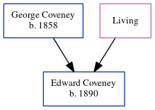

Lily Maria Lockley (née Coveney) 1890 - 1949
[ Home ] | [ Calendar ] | [ Surnames Index ] | [ Errors ] | [ Family History ]The child of George Coveney (a bricklayer's labourer) and Maria Rolfe, Lily Coveney, the second cousin twice-removed on the father's side of Nigel Horne, was born in Cheriton, Kent, England on 13 Jun 18901,2,3, was baptised there at St Martin on 2 Aug 1891 and married Francis Lockley (with whom she had 4 children: Doris Lilian F, Francis Guy, Douglas Charles and Hilda Mary) in Elham, Kent, England around Aug 19117.
During her life, she was living at Cheriton Street in Cheriton on 31 Mar 19011 and at 58 Royal Military Avenue in Cheriton on 29 Sept 19392 and in 1949.
She died on 5 May 1949 in Chartham Downs, Kent, England4,5,6.
Parents
- George James was born in 1858
- Maria
Children
- Doris Lilian F was born on 22 Feb 1912
- Francis Guy was born on 26 Jan 1914
- Douglas Charles was born on 22 Feb 1920
- Hilda Mary was born on 14 Mar 1924
Citations
- 1901 England, Wales & Scotland Census - Findmypast (was age 9 and the daughter of the head of the household)
- 1939 Register - Findmypast (was the wife of the head of the household)
- England & Wales births 1837-2006 - Findmypast
- England & Wales Government Probate Death Index 1858-2019 - Findmypast
- England & Wales deaths 1837-2007 - Findmypast
- England & Wales deaths 1837-2007 - Findmypast
- England & Wales Marriages 1837-2005 - Findmypast
Media
England & Wales marriages 1837-2008 - BMD/M/1911/3/AZ/000218/146
England & Wales births 1837-2006 - BMD/B/1891/3/AZ/000127/013
England Births & Baptisms 1538-1975 - R_885430157
Kent Baptisms - GBPRS/CANT/B/96416273
1939 Register - TNA/R39/1724/1724J/013/08
England & Wales Government Probate Death Index 1858-2019 - GBOR/GOVPROBATE/C/1949-1949/00114979
England & Wales deaths 1837-2007 - BMD/D/1949/2/AZ/000585/122
Family Tree
Map
Generated by ged2site. Last updated on Jul 3, 2024
Known Issues
Residence record for 1949 contains no citation
Listed in the residence for 29 Sep 1939, but spouse Francis Lockley is not
Listed in the residence for 1949, but spouse Francis Lockley is not